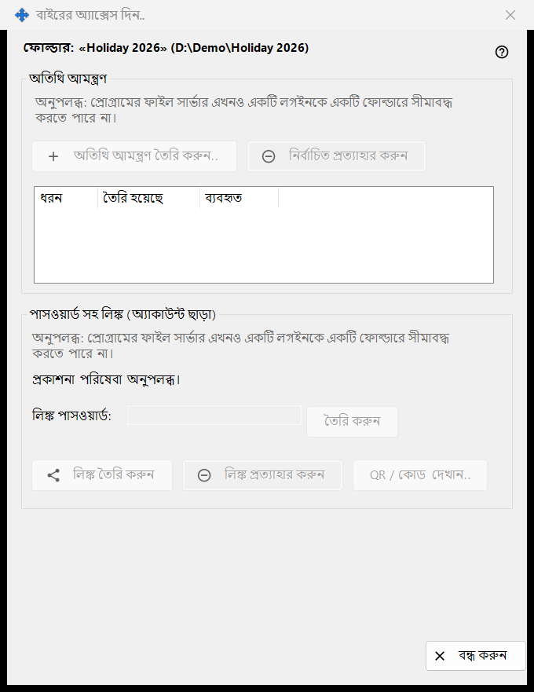
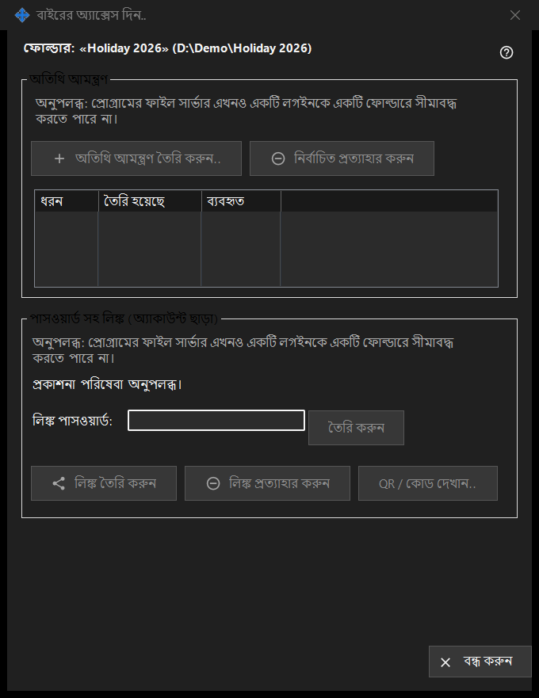

বাইরের অ্যাক্সেস দিন
এটি কীসের জন্য
আপনার নিজের ডিভাইসের বাইরের লোকদের জন্য একটি শেয়ার করা ফোল্ডারের অ্যাক্সেস নিয়ন্ত্রণ করে: অতিথি আমন্ত্রণ, বা অ্যাকাউন্ট ছাড়াই পাসওয়ার্ডযুক্ত লিঙ্ক। নির্বাচিত ফোল্ডারের জন্য Share Manager-এর মূল উইন্ডোর বাইরের অ্যাক্সেস দিন.. বোতাম থেকে এটি খোলে। এই সংস্করণে নতুন অ্যাক্সেস তৈরির নিয়ন্ত্রণগুলো বন্ধ এবং উইন্ডো কারণ দেখায়, তবে আগে থেকে থাকা অ্যাক্সেস প্রত্যাহার করা যায়।


এই ক্রমে
- ফোল্ডারের নাম ও পথসহ শিরোনামের লাইনটি পড়ুন।
- প্রতিটি গ্রুপে কারণের লাইনটি পড়ুন; সেটি দেখা গেলে নতুন কিছু তৈরি করা যায় না।
- অ্যাক্সেস সরাতে একটি আমন্ত্রণ নির্বাচন করে নির্বাচিত প্রত্যাহার করুন চাপুন, অথবা লিঙ্ক প্রত্যাহার করুন চাপুন।
- বেরোতে বন্ধ করুন (Escape) চাপুন।
উপাদানসমূহ
ফোল্ডার ও অবস্থা
গাঢ় লাইনটি ফোল্ডার ও তার পথের নাম দেয়। নিচের অবস্থার লাইন শেষ ফলাফল জানায়। প্রকাশনা সার্ভিস না চললে উইন্ডো বলে: প্রকাশনা পরিষেবা অনুপলব্ধ। এবং তার বোতামগুলো বন্ধ থাকে।
অতিথি আমন্ত্রণ
গ্রুপে অতিথি আমন্ত্রণ তৈরি করুন.., নির্বাচিত প্রত্যাহার করুন এবং এই ফোল্ডারের অতিথি আমন্ত্রণের জন্য ধরন, তৈরি হয়েছে ও ব্যবহৃত কলামসহ একটি তালিকা আছে। প্রত্যাহার করলে আমন্ত্রণটি সরে যায়; ফোল্ডার বা তার ফাইল মুছে যায় না।
পাসওয়ার্ডযুক্ত লিঙ্ক (অ্যাকাউন্ট ছাড়া)
অবস্থার লাইনে লিঙ্ক তৈরি করা হয়নি। অথবা লিঙ্ক সক্রিয়। লেখা থাকে। লিঙ্ক পাসওয়ার্ড: বক্সটি আড়াল করা এবং তৈরি করুন সেটি ভরে দেয়। লিঙ্ক সক্রিয় থাকলে লিঙ্ক তৈরি করুন বদলে লিঙ্ক আপডেট করুন হয়ে যায়। লিঙ্ক প্রত্যাহার করুন আগে জিজ্ঞাসা করে, কারণ লিঙ্কে চলা প্রতিটি সক্রিয় সেশন শেষ হয়। QR / কোড দেখান.. লিঙ্কটি কোড হিসেবে দেখায়।
তৈরি কেন বন্ধ
প্রতিটি গ্রুপে কারণের একটি লাইন দেখায় যে প্রোগ্রামের ফাইল সার্ভার কোনো লগইনকে একটি ফোল্ডারে সীমিত করতে পারে না। সেটি দেখা গেলে আমন্ত্রণ বা লিঙ্ক তৈরির সব নিয়ন্ত্রণ নিষ্ক্রিয় থাকে। আগে থেকে থাকা অ্যাক্সেস প্রত্যাহার কেবল কী আছে তার ওপর নির্ভর করে।
ম্যানেজার সেটিংস · SFTP শেয়ারিং সেটিংস · এক্সচেঞ্জ সার্ভার সেটিংস